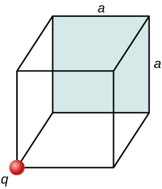
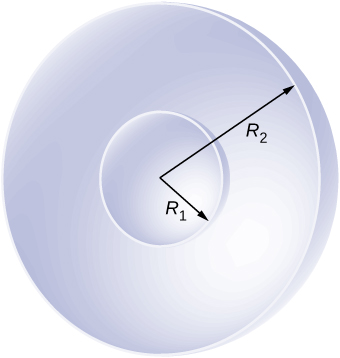

Phy 222 Homework 3: Gauss’ Law
Problem 3.1
Consider the uniform electric field \(\vec{E} = (4.0\hat{j} + 3.0\hat{k}) \times 10^3 \, \mathrm{N/C}\). What is its electric flux through a circular area of radius \(2.0 \, \mathrm{m}\) that lies:
- In the xy-plane.
- In the yz-plane.
- 45° rotated from the xy-plane.
Problem 3.2
A charge \(q\) is placed at one of the corners of a cube of side \(a\), as shown below. Find the magnitude of the electric flux through the shaded face due to \(q\). Assume \(q > 0\).

Gauss’ Law for a Plane
Problem 3.3
A large sheet of charge has a uniform charge density of \(10 \, \mu\text{C/m}^2\). What is the electric field due to this charge at a point just above the surface of the sheet?
Problem 3.4
Two parallel plates, \(10 \, \text{cm}\) on a side, are given equal and opposite charges of magnitude \(5.0 \times 10^{-9} \, \text{C}\). The plates are \(1.5 \, \text{mm}\) apart. What is the electric field at the center of the region between the plates?
Problem 3.5
Two \(10 \, \text{cm} \times 10 \, \text{cm}\) pieces of aluminum foil of thickness \(0.1 \, \text{mm}\) face each other with a separation of \(5 \, \text{mm}\). One of the foils has a charge of \(+30 \, \mu\text{C}\) and the other has \(-30 \, \mu\text{C}\).
- Find the charge density at all surfaces, i.e., on those facing each other and those facing away.
- Find the electric field between the plates near the center assuming planar symmetry.
Gauss’ Law for a Cylinder
Problem 3.6
A long silver rod of radius \(3 \, \text{cm}\) has a charge of \(-5 \, \mu\text{C/cm}\) on its surface.
- Find the electric field at a point \(5 \, \text{cm}\) from the center of the rod (an outside point).
- Find the electric field at a point \(2 \, \text{cm}\) from the center of the rod (an inside point).
Problem 3.7
Charge is distributed uniformly with a density \(\rho\) throughout an infinitely long cylindrical volume of radius \(R\). Show that the field of this charge distribution is directed radially with respect to the cylinder and that:
\[E = \frac{\rho r}{2 \epsilon_0}, (r \leq R) \qquad \qquad \qquad E=\frac{\rho R^2}{2 \epsilon_0 r}, (r \geq R)\]
Gauss’ Law for a Sphere
Problem 3.8
The electric field \(10.0 \, \text{cm}\) from the surface of a copper ball of radius \(5.0 \, \text{cm}\) is directed toward the ball’s center and has a magnitude of \(4.0 \times 10^2 \, \text{N/C}\). How much charge is on the surface of the ball?
Problem 3.9
A charge of \(-30 \, \mu\text{C}\) is distributed uniformly throughout a spherical volume of radius \(10.0 \, \text{cm}\). Determine the electric field due to this charge at a distance of:
- \(2.0 \, \text{cm}\) from the center of the sphere,
- \(5.0 \, \text{cm}\) from the center of the sphere, and
- \(20.0 \, \text{cm}\) from the center of the sphere.
Problem 3.10
Charge is distributed throughout a spherical volume of radius \(R\) with a density \(\rho = \alpha r^2\), where \(\alpha\) is a constant. Determine the electric field due to the charge at points both inside and outside the sphere.
Problem 3.11
An aluminum spherical ball of radius \(4 \, \text{cm}\) is charged with \(5 \, \mu\text{C}\) of charge. A copper spherical shell of inner radius \(6 \, \text{cm}\) and outer radius \(8 \, \text{cm}\) surrounds it. A total charge of \(-8 \, \mu\text{C}\) is put on the copper shell.
- Find the electric field at all points in space, including points inside the aluminum and copper shell, when the copper shell and aluminum sphere are concentric.
- Find the electric field at all points in space, including points inside the aluminum and copper shell, when the centers of the copper shell and aluminum sphere are \(1 \, \text{cm}\) apart.
Problem 3.12
Shown below are two concentric conducting spherical shells of radii \(R_1\) and \(R_2\), each of finite thickness much less than either radius. The inner and outer shells carry net charges \(q_1\) and \(q_2\), respectively, where both \(q_1\) and \(q_2\) are positive.
- What is the electric field for \(r < R_1\)?
- What is the electric field for \(R_1 < r < R_2\)?
- What is the electric field for \(r > R_2\)?
- What is the net charge on the inner surface of the inner shell, the outer surface of the inner shell, the inner surface of the outer shell, and the outer surface of the outer shell?

\(~\)